Activity: Apply a bearing load
-
Open the file named Mower_pulley.asm.
Simulation models are delivered in the \Program Files\Siemens\Solid Edge 2023\Training\Simulation folder.
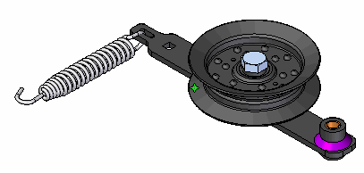
Note:You can analyze a single part while its parent assembly is displayed.
-
Choose Simulation tab→Study group→New Study.
-
Choose the linear static study type and tetrahedral mesh type. Select OK.
-
To satisfy the Define command, select the wheel as the part to activate.
Note:The Define command allows you to analyze a single part while working within the context of an assembly.
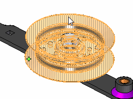
-
Click Accept on the command bar.
-
Hide the display of some fasteners:
-
Rotate and zoom the view to see the underside of the wheel.
-
Select washer.par. Also select the two occurrences of nut.par within the lever_arm.asm.
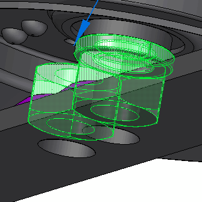
-
Right-click and choose Hide.
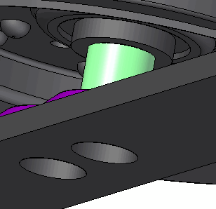
-
-
Add a bearing load:
-
Select Simulation tab→Structural Loads group→Bearing Load

The Loads command bar is displayed.
-
Select the cylindrical face shown.
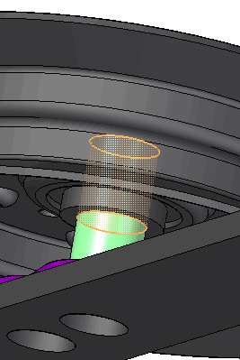
-
Type 50 for the load value and 135 for the angle value, and then press Tab.
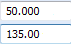
-
Rotate the view so you can look straight down into the center of the wheel. Select the origin of the directional steering wheel, align it with the center of the bore and ensure the primary axis points along the direction of the lever arm.
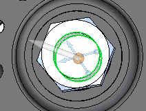
-
To learn how to use the steering wheel to change the load direction, see Loads directional steering wheel.
-
Right-click in space to accept, and then click to finish.
-
Hide bolt.par to see the bearing load symbol.
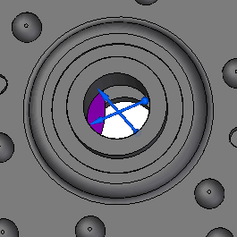
-
-
Define a fixed constraint on several faces.
-
Choose Simulation tab→Constraints group→Fixed.

-
Rotate the view in order to see a side of the wheel. Select the faces in the center of the wheel.
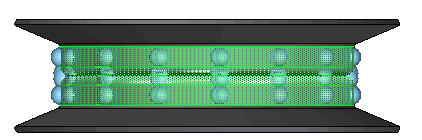
-
Right-click in space to accept, and then click to finish.
-
Press Ctrl+I to set an isometric view.
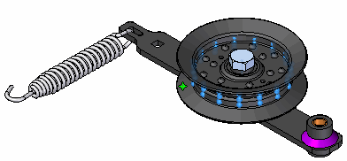
-
-
Mesh and solve the study:
-
Select the Mesh command. Choose Mesh & Solve.
After a few moments, the part is meshed and solved. The results are displayed in the Simulation Results environment.
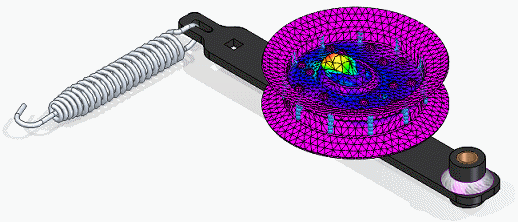
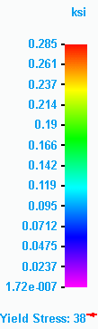
-
Select Home tab→Deformation group→Actual. Zoom to see the highest stress concentration.
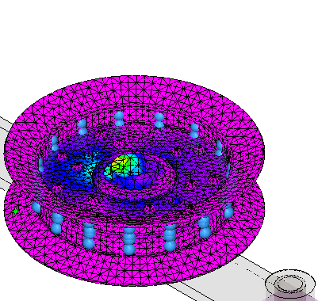
-
-
Close this file.
How do I
Define a loadActivity: Apply a centrifugal load
Activity: Apply a torque load
Activity: Apply a body temperature load
Learn more
Creating and using loadsLoad labels and symbols
Structural and body loads
Thermal loads
External loads (imported loads)
Loads directional steering wheel
Look up more details
Loads command barThermal Load Options dialog box
Radiation Load Options dialog box
Color dialog box
Graphic Symbol Size dialog box